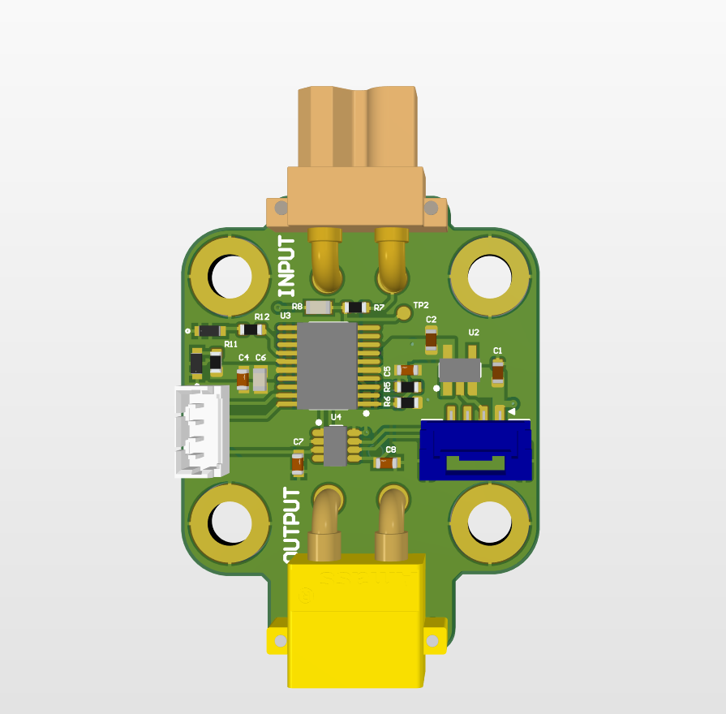

Current Sensor Flash Calibration
Retiring the paper-label calibration process on ARUW's current sensor boards: I rewrote the firmware in Rust with Embassy so each board stores its own calibration constants in a reserved region of flash memory — surviving firmware updates, ending the physical bookkeeping, and making sensor bring-up repeatable.
The problem
ARUW's current sensor boards measure motor and system currents across the robot and report them over CAN to the main control boards. Every individual sensor board has a slightly different offset and gain — silicon variation, resistor tolerance, and layout-dependent offsets all contribute — so each board needs its own calibration constants to produce accurate readings.
The old system handled this with physical bookkeeping. Each board got a printed label with a calibration ID, and somewhere else (a spreadsheet, a text file, a teammate's head) lived the mapping from that ID to the actual calibration constants. At flash time the correct constants had to be compiled into firmware and loaded onto the right board. Any mismatch between the label and what ended up on-chip silently produced wrong current readings on a live robot.
Worse, every firmware update re-flashed the whole chip — so the calibration "baked in" at build time was also erased at every update and had to be re-applied, perfectly, every time. It was fragile, error-prone, and a recurring source of debugging pain.

The fix: calibration lives on the board
The obvious improvement was to make each board store its own calibration directly in on-chip flash, so "which constants go with which board" stops being a human-memory problem. The constants get written once at bring-up time, then read back at every boot from a fixed flash location that the firmware never touches during normal updates.
That turned into three pieces of work: a programmer that writes calibration values into the right place, a runtime that reads them back into RAM at startup, and a linker configuration that carves out a region of flash the rest of the firmware won't touch.
The calibration programmer
Rust is deliberately strict about memory access — you can't just
pick a pointer and write bytes at it — so driving flash required
going through a proper abstraction. I built a small standalone
program, separate from the main firmware, whose only job is to
write calibration constants into flash. It uses the
embedded-storage crate to abstract over the STM32's
flash peripheral: unlock, erase the target sector, program the
bytes, and verify the readback.
The programmer takes the calibration values as input — either via a command-line parameter baked into the build or loaded from a bench measurement script — and commits them to the reserved flash region. Once it runs successfully on a new board, that board is calibrated for the rest of its life regardless of what gets flashed on top of it.
The runtime read path
The production firmware — the one that actually runs on the
robot, reads the sensor, and pushes values over CAN — starts by
pulling the calibration constants out of flash into RAM. Same
embedded-storage abstraction as the programmer,
just on the read side: open the flash partition, read the
calibration struct at its fixed offset, and keep it in memory
for the rest of the boot.
From there, the normal sensor loop does what it always did — sample the ADC, apply the calibration, publish over CAN — but now the calibration step uses values that are guaranteed to match the physical board it's running on. No more per-build constants, no labels, no mapping tables. The sensor reports correctly the first time it boots after a firmware update.
Reserving the flash region with memory.x
The critical detail that makes this all work: the calibration region has to survive a firmware reflash. On a stock linker configuration, flashing new firmware happily wipes the entire program flash — including anything I'd written there earlier — and the calibration disappears.
The fix is at the linker level. In the memory.x
file I split flash into two regions: a larger region for code
and read-only data, and a smaller region reserved for
calibration. The main firmware's link script only places code
and data in the code region, so a reflash never targets the
calibration sector. The programmer writes to the calibration
region directly via the flash peripheral, bypassing the linker
entirely. Clean separation, and the flash sector that holds
calibration is effectively invisible to the normal build.
Tooling and workflow
The whole thing is Rust + Embassy on an STM32. I used SEGGER RTT for real-time logging during bring-up, flashing through a J-Link with Ozone as the debugger — the combination makes stepping through the flash programmer and watching the erase / write / verify cycle actually pleasant to debug. That tooling loop mattered a lot: the cost of a mistake writing to flash is potentially bricking a board, so being able to set breakpoints around the programming sequence and inspect memory live was worth the setup time many times over.
Bringing up new sensors
Alongside the firmware work, I handled the physical bring-up of new current sensor boards as they arrived — the first-power, sanity-check, calibrate, deploy workflow. That meant running the programmer against each new board, collecting and documenting the measured constants, and verifying the readings matched what the rest of the robot expected.
More importantly, I wrote down the whole process: how the flash regions are laid out, what the programmer expects, how to measure the calibration values on the bench, how to verify a new board with RTT logging, and how to recover if something goes wrong. The team had been losing institutional knowledge every graduation cycle; the docs are there so the next person who has to bring up a sensor board doesn't have to reverse- engineer the system from the code.
Impact
End-to-end, the calibrated Hall-effect current sensors now report to 99.8% accuracy, and along the way I tuned the CAN stack on the same firmware to handle 20× greater throughput than the original — the robot's main control board can now ingest sensor telemetry without the bus being the bottleneck.
Operationally, calibration is a one-time step per physical board. Firmware can be updated as many times as needed without touching calibration: the constants stay put in their reserved flash region, and the runtime picks them up on every boot. Mislabeled boards and calibration-lost-in-reflash bugs are gone, and the bring-up workflow is now a documented procedure that doesn't require me (or anyone specific) to be in the room.